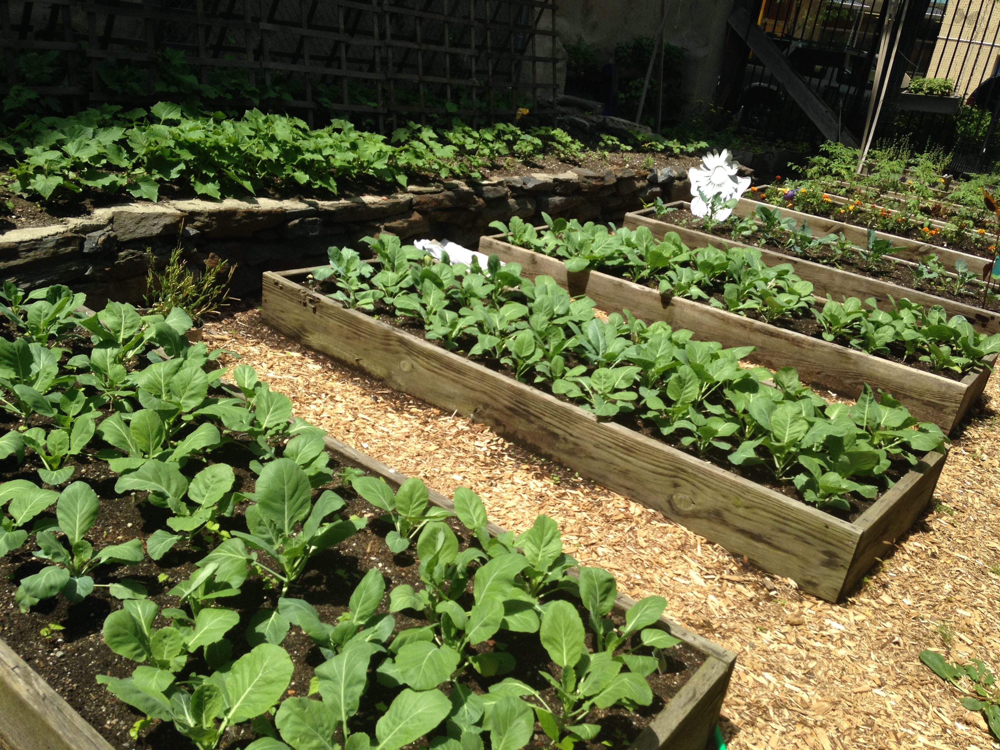
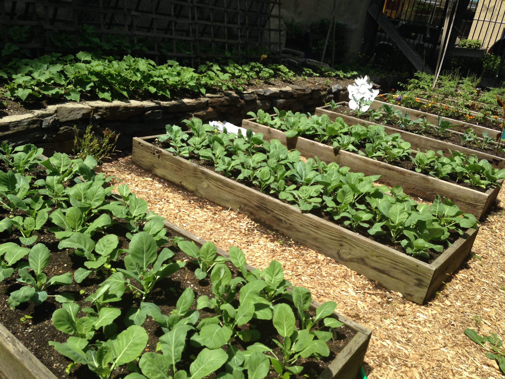

June 4, 2015
Why "A Sustainable Summer"?
First of all, welcome to the blog for Harlem Grown’s 2015 summer camp!
You may have noticed that the title of this blog is “A Sustainable Summer.” Why? Well, it sounds good, but that’s not all.


Harlem Grown is all about urban farming, nutrition, and SUSTAINABILITY. We operate several farms in Harlem and the food grown at our urban farms is given to the community for free.
This summer we will be engaging children in Harlem, ages 7-14, in gardening, healthy eating, cooking, composting, environmental science, arts and crafts, and recreational activities. Last summer in 2014, we started our summer camp and it was super successful. Of course, summer 2015 is going to be even more awesome. You know what’s the best part? For the first time, you can keep up with what our campers are up to! Every Saturday, we’re going to be showcasing our campers’ creativity (and of course, their green thumbs). Stay tuned!